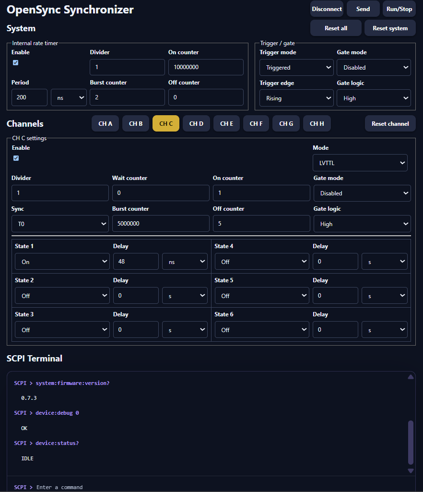

Software Guide#
OpenSync can be controlled from Python or from its browser-based progressive web application (PWA). Both use the device’s USB serial SCPI interface. The Python library suits scripts, notebooks, and integration with an experiment; the PWA provides a graphical editor and an interactive SCPI terminal.
Python package#
Installation#
The planned package installation command is:
pip install opensync
Note
Package publication is planned. Use the development setup below until a release is available.
For current development, use an environment where this project’s OpenSync
library is already installed, or make the repository’s software directory
available on Python’s import path. For example, from the repository root in
PowerShell:
$env:PYTHONPATH = (Resolve-Path software).Path
The library uses NumPy, Matplotlib, and pyserial. Activate the same Python environment for your scripts and notebooks.
Connect and read device information#
Connect OpenSync over USB, discover the available devices, and read the identity and status of the first one:
import opensync
ports = opensync.device_comm_search()
if not ports:
raise RuntimeError("No OpenSync device found. Check the USB connection.")
with opensync.device_comm_managed(ports[0]) as device:
print(opensync.device_system_version(device))
print(opensync.device_system_status(device))
The context manager closes the connection when the block ends. This example reads device information without starting a timing sequence.
Configure and run a sequence#
The normal Python workflow is:
Create clock and channel parameter dictionaries with
get_clock_params()andget_pulse_params().Set timing, counters, synchronization, and enabled channels using the
config_clock_*andconfig_pulse_*helper functions.Inspect pulse timing with
get_pulse_plot()when useful.Open the serial connection and upload both configurations with
device_params_load(device, clock_params, pulse_params).Use
device_system_fire()to start anddevice_system_stop()to stop.
The notebooks below work through the individual concepts. Function details are in the Python API Reference.
PWA#
The OpenSync Synchronizer PWA is in software/pwa and uses the Arcane OS
SDK. Its interface groups the internal rate timer and trigger/gate controls
under System, with settings for outputs CH A through CH H below.


OpenSync Synchronizer PWA: system settings, output-channel controls, and the SCPI terminal.#
Run the PWA from the checkout#
Use the Node.js version required by software/pwa/package.json (currently
>=22.23.2). From the repository root:
cd software/pwa
npm ci
npm run dev -- --app opensync-pwa --http --port 8000
Open the local URL printed by the server. Device access requires a browser
with Web Serial support, such as a supported desktop Chrome or Edge version.
Web Serial is available in secure contexts: use HTTPS when hosting the app;
loopback addresses such as http://127.0.0.1 are suitable for local work.
See the Web Serial documentation for browser requirements.
Use the controls#
Connect / Disconnect opens or closes the USB serial connection. Select OpenSync in the browser’s serial-port chooser when prompted.
System sets the internal rate timer, its counters, and trigger/gate modes.
CH A–CH H selects the output channel whose settings you are editing.
Send uploads the system and channel settings to the device.
Run/Stop queries device status and requests a start or stop.
Reset all, Reset system, and Reset channel restore the respective settings in the editor. Use Send to apply edited settings to the device.
SCPI Terminal sends individual commands and displays responses.
Settings are stored locally in the browser through DBOPFS. Editing or saving browser settings is separate from sending them to the device. Close the serial connection before switching control between the PWA and a Python session.
Browser distribution#
To produce the browser package from software/pwa:
npm run package -- --app opensync-pwa
The packaged application is written to dist/opensync-pwa. Serve that
folder through an appropriate web host. On a supported browser, the PWA can
be installed as an application window using the browser’s installation UI.
Basic-operation notebooks#
These notebooks teach device communication, clock configuration, and pulse timing. They belong to this guide. Documented uses in real experiments will appear separately under Examples (experiments).
The documentation displays the notebooks and their saved outputs without executing their cells or opening a hardware connection.